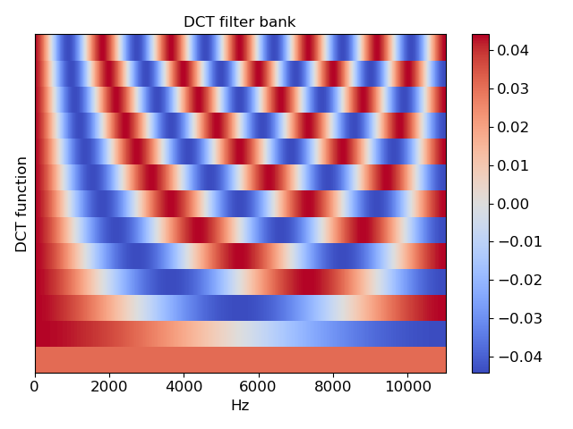

librosa.filters.dct¶
-
librosa.filters.dct(n_filters, n_input)[source]¶ Discrete cosine transform (DCT type-II, normalized) basis.
Warning
This function is deprecated in librosa 0.6.1. It will be removed in 0.7.0.
- Parameters
- n_filtersint > 0 [scalar]
number of output components (DCT filters)
- n_inputint > 0 [scalar]
number of input components (frequency bins)
- Returns
- dct_basis: np.ndarray [shape=(n_filters, n_input)]
DCT (type-II) basis vectors [1]
See also
Notes
This function caches at level 10.
Examples
>>> n_fft = 2048 >>> dct_filters = librosa.filters.dct(13, 1 + n_fft // 2) >>> dct_filters array([[ 0.031, 0.031, ..., 0.031, 0.031], [ 0.044, 0.044, ..., -0.044, -0.044], ..., [ 0.044, 0.044, ..., -0.044, -0.044], [ 0.044, 0.044, ..., 0.044, 0.044]])
>>> import matplotlib.pyplot as plt >>> plt.figure() >>> librosa.display.specshow(dct_filters, x_axis='linear') >>> plt.ylabel('DCT function') >>> plt.title('DCT filter bank') >>> plt.colorbar() >>> plt.tight_layout()
